The MVP
The MVP sought to "create an app that can answer any company question, in any situation, at any place and at anytime."
The legacy software was focused on educating employees about their benefit options. The new app would direct employees’ estions to customized answers and experts based on the employee's’ chosen benefits.
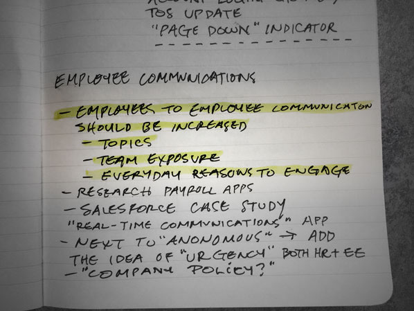
One of the biggest hurdles for the app to overcome was ensuring safe and secure storage of employees’ private data, including a year-long HIPPA approval process. The challenge was to make the sign-in process secure while allowing employees to easily and frequently log in. We chose to make biometrics an MVP requirement.
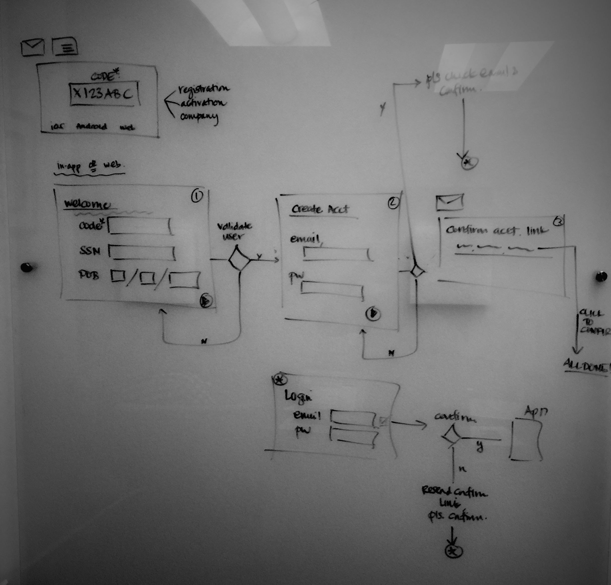
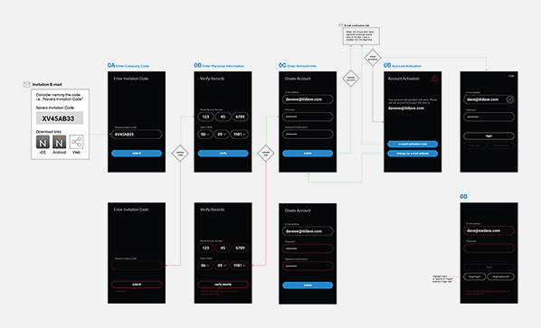
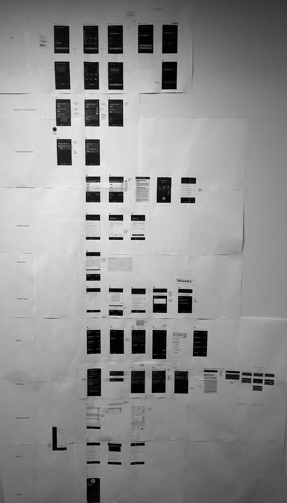
I led internal stakeholder alignment across product, engineering and thought leadership teams. In order to lead this process, I created a physical collaboration space to facilitate cross-functional discussions around refinements to the app.
While there was debate around the appropriate product naming strategy, the team decided to initially name the app after the company.
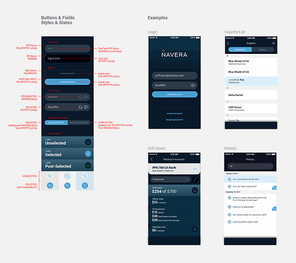
“Move Search to the Center of Everything”
The next big release focused on featuring search as the centerpiece of the experience.
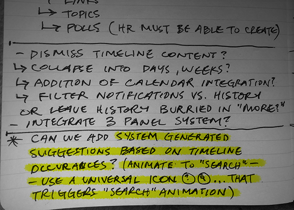
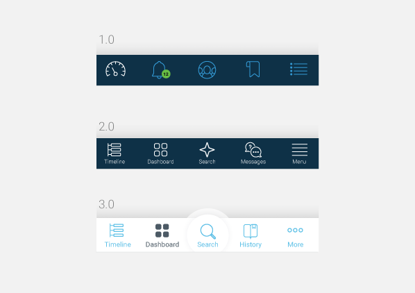
With the “search central” design, each user could be navigating different experiences in an ad-hoc manner. Therefore, the design had to simulate a clear “transportation” to and from different experience – i.e., speaking into the phone, charting different search results, etc.
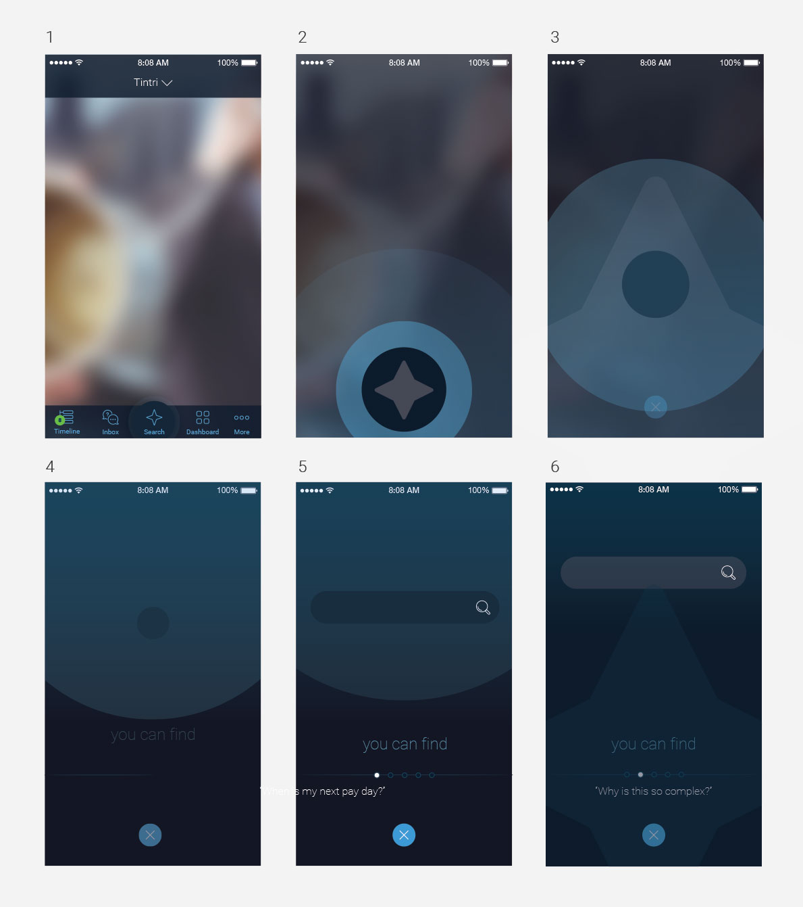
The previous story board lead to this initial animation. Working closely with the iOS and Android engineers, this animation illustrated the "unique" opening and closing of the search modal.
Set the stage for the “Virtual Agent Bot”
The next challenge was creating a smart "virtual agent" without an ‘intelligence layer' present. The app would need to train a user base to interact with a unique 'bot-driven' paradigm.
The "UX Learning Curve" is a term that I often use to describe the need for user experience paradigms and the position of UI elements to remain consistent over time. Understanding the plan for future feature allows those features to be easily rolled into the existing app without forcing the user base to continually re-learn how to use the app after each release.
In the case of the smart “virtual agent,” the initial version displayed a series of well-timed ellipses animations to mimic processing time, to indicate to the user that the system is processing their request. This was so that when the "intelligence layer" in future releases is layered on, then the experience will be seamless.
In the case of the smart “virtual agent,” the initial version displayed a series of well-timed ellipses animations to mimic processing time, to indicate to the user that the system is processing their request. This was so that when the "intelligence layer" in future releases is layered on, then the experience will be seamless.

Admin to Employee Publishing
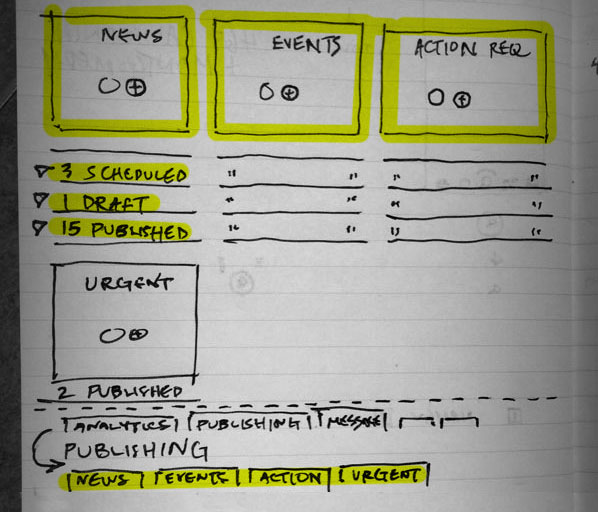
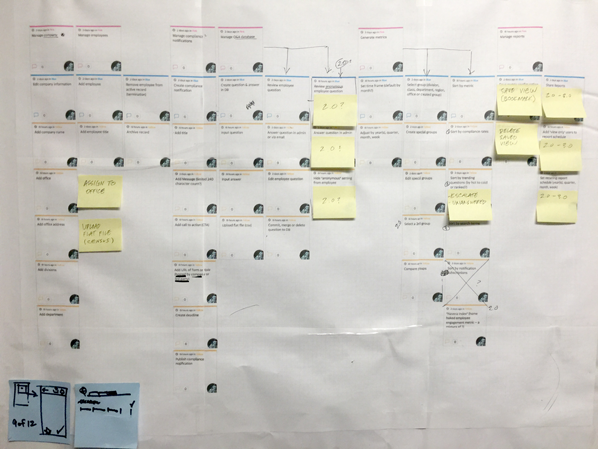
Next step was creating a push notification publishing system where HR departments could release timely and required information to employees without making it feel like 'required reading.' I led a work session with subject matter experts and thought leaders to map out different tasks around potential employee questions and possible HR responses.
Existing blogging and publishing software were researched to determine best practices and focused on a mobile first approach. In refining the prototype, the team identified the need to build a publication index and recipient tool.
The goal was to design both iterations of the publication, native mobile and web app, to look content rich but only limit the publisher to one image.
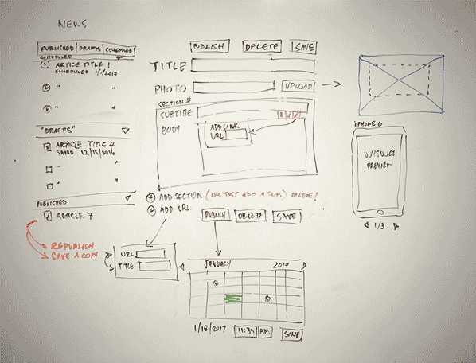
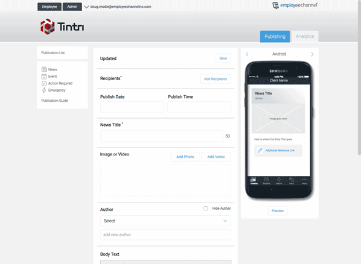
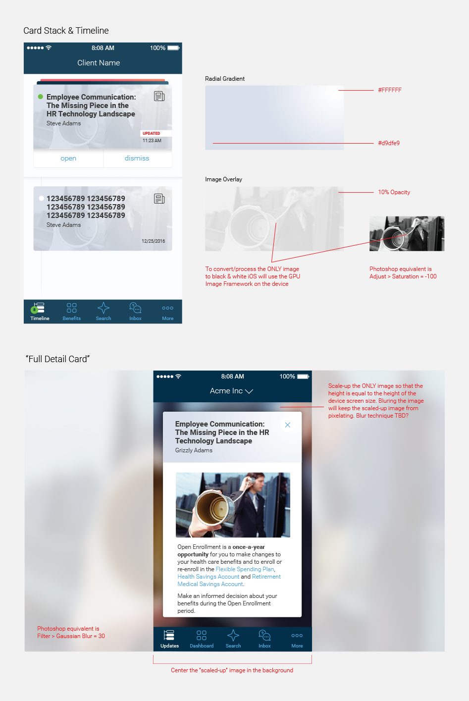
Timely and Urgent Push
Employees receive various push notifications -- benefit updates, payroll notices, company holidays, etc. The app features a familiar user experience paradigm--timeline-- to organize the wide range of different content.
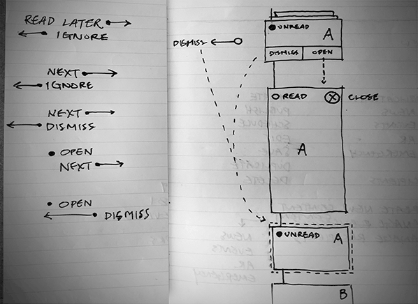
The app’s interaction model allows employees to assess content in real life with quick gestures (read or dismiss), thereby providing real-time metrics to HR teams on relevant topics.